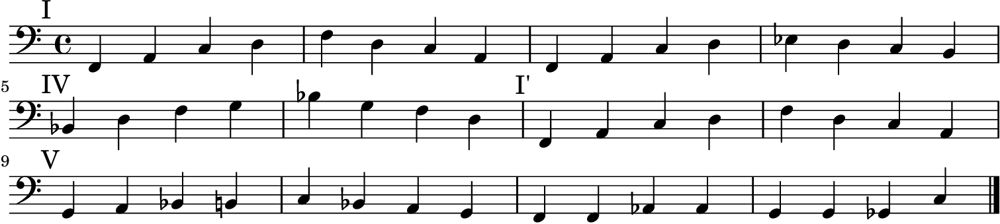

(define the-dream (+ 'scheme 'lilypond))
Posted on 7 December, 2014
by Eric Bailey

Lately I've gotten increasingly obsessed with Lisp family of programming languages and am determined to write as little non-Lisp code as possible.
As such, I've started experimenting with writing more Scheme in Lilypond. This
is an entirely impractical example, but it gives a glimpse of what's possible. I
can't wait to start map-ping lists of musical expressions and representing
music as trees.
Note to self: Dive deeper into these pertinent blog posts ASAP.
the_dream.scm
(define riffs (make-hash-table 4)) (hashq-set! riffs 'I #{ \mark \markup { I } f4 a c d | f d c a | f4 a c d | ees d c b | #}) (hashq-set! riffs 'IV #{ \mark \markup { IV } bes4 d f g | bes g f d | #}) (hashq-set! riffs 'I' #{ \mark \markup { "I'" } f,4 a c d | f d c a | #}) (hashq-set! riffs 'V #{ \mark \markup { V } g a bes b | c bes a g | #}) (hashq-set! riffs 'turnaround #{ f4 f aes aes | g g ges c | #})
the_dream.ly
\version "2.19.24" \include "lilypond-book-preamble.ly" \paper { oddFooterMarkup = ##f } #(load "the_dream.scm") \score { \relative c' { #(hashq-ref riffs 'I) \break #(hashq-ref riffs 'IV) #(hashq-ref riffs 'I') \break #(hashq-ref riffs 'V) #(hashq-ref riffs 'turnaround) \bar "|." } \layout { indent = 0 } }
N.B. This LilyPond code doesn't require version 2.19.x, so feel free to change
it to 2.18.x if you're not living on the edge.
Generate the PNG
lilypond --png -dresolution=200 -o output the_dream